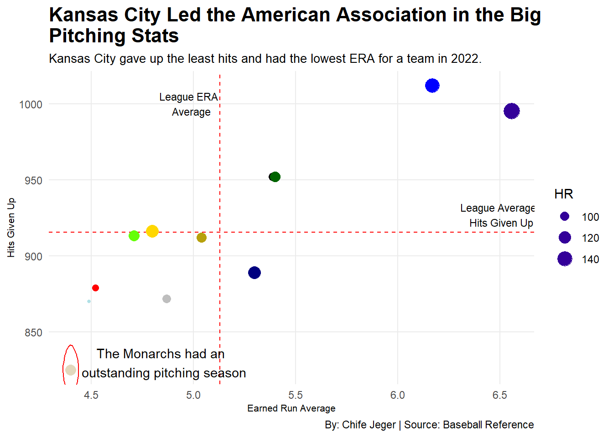
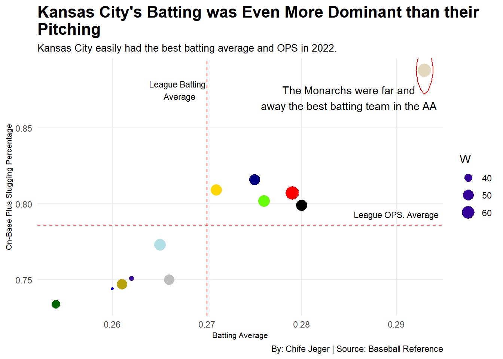
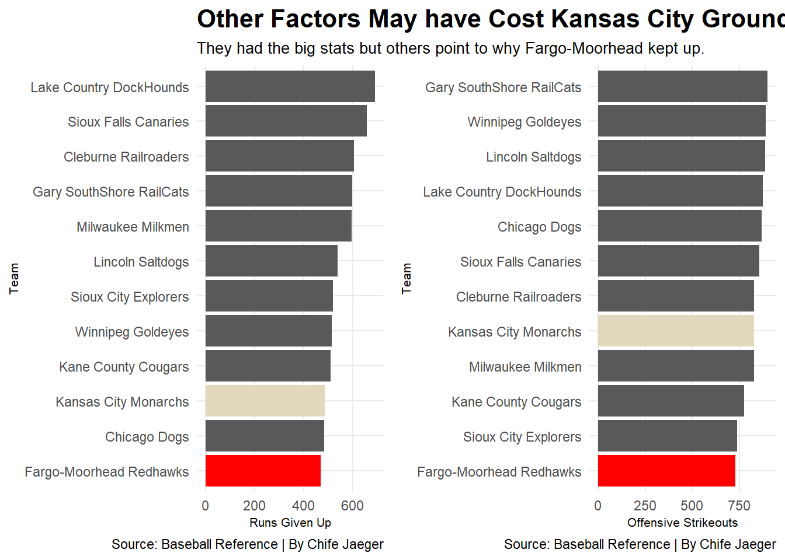
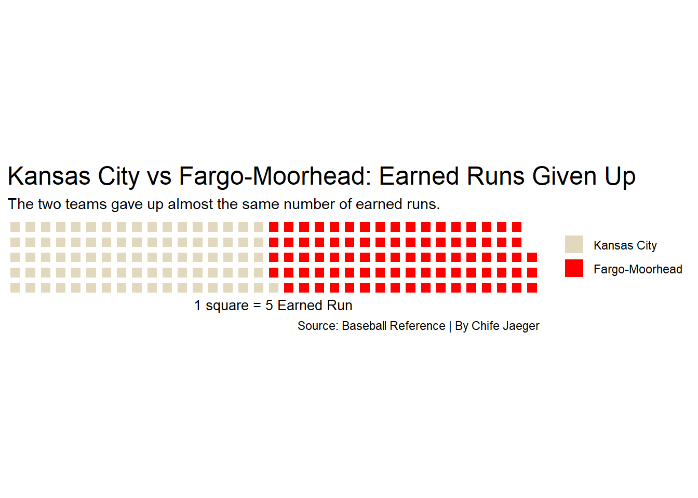

Why Did the Kansas City Monarchs Not Crush the Fargo-Moorhead Redhawks?
baseball
american association
monarchs
redhawks
Author
Chife Jaeger
Published
May 4, 2023
The two best regular season teams in the 2022 American Association baseball season were without a doubt the Kansas City Monarchs and the Fargo-Moorhead Redhawks. Both teams battled all season long for the division crown with Kansas City barely edging Fargo-Moorhead out for the title in the last week of the regular season.
Later in the post-season, the two rivals met in the West Division Championship Series to decide who would represent their respective division in the Miles Wolff Cup Finals. The Redhawks ultimately defeated the Monarchs in the three games series 2-1 to advance to the finals.
But after having a look at the statistics from both teams in the regular season, it appeared as if the Monarchs were the clearly superior team. Kansas City boasted some of the most dominant stats the American Association had ever seen. Let’s look at some of those stats that made the Monarchs so dominant. Starting with pitching
ggplot() +geom_point(data = Pitching,aes(x = ERA, y = H, size = HR),alpha = .3 ) +geom_vline(xintercept =5.13, color ="red", linetype ="dashed") +geom_hline(yintercept =915.58333, color ="red", linetype ="dashed") +geom_text(aes(x =4.985, y =1000), label ="League ERA \n Average", size =3, color ="black") +geom_text(aes(x =6.5, y =927), label ="League Average \n Hits Given Up", size =3, color ="black") +geom_point(data = KCP, aes(x = ERA, y = H, size = HR), color ='#E2D8BD') +geom_point(data = MMP, aes(x = ERA, y = H, size = HR), color ='black') +geom_point(data = CRP, aes(x = ERA, y = H, size = HR), color ='navy') +geom_point(data = WGP, aes(x = ERA, y = H, size = HR), color ='gold') +geom_point(data = FMRP, aes(x = ERA, y = H, size = HR), color ='red') +geom_point(data = KCCP, aes(x = ERA, y = H, size = HR), color ='#65FE08') +geom_point(data = CDP, aes(x = ERA, y = H, size = HR), color ='powderblue') +geom_point(data = SCEP, aes(x = ERA, y = H, size = HR), color ='grey') +geom_point(data = LSP, aes(x = ERA, y = H, size = HR), color ='#B7A10D') +geom_point(data = GSRP, aes(x = ERA, y = H, size = HR), color ='darkgreen') +geom_point(data = SFCP, aes(x = ERA, y = H, size = HR), color ='blue') +geom_point(data = LCDP, aes(x = ERA, y = H, size = HR), color ='#330099') +geom_encircle(data = KCP, aes(x = ERA, y = H), s_shape =0.03, expand =-0.18, color ="red") +geom_text(aes(x =4.85, y =830, label ="The Monarchs had an \n outstanding pitching season")) +labs(title ="Kansas City Led the American Association in the Big \nPitching Stats",subtitle ="Kansas City gave up the least hits and had the lowest ERA for a team in 2022.",x ="Earned Run Average", y ="Hits Given Up",caption ="By: Chife Jeger | Source: Baseball Reference") +theme_minimal() +theme(plot.title =element_text(size =16, face ="bold"),axis.title =element_text(size =8),plot.subtitle =element_text(size =10),panel.grid.minor =element_blank() )

Code
ggsave("image.png")
The Kansas City Monarchs were easily the best pitching team in terms of team average ERA and total hits given up. They didn’t have the least amount of home runs given up but they were in the upper echelon of the league in that category as well.
These two main stats are obviously linked as the more hits you give up the more runs you are likely to give up as well. But something else that is very interesting can be found in this graph. The Monarchs by far gave up the least amount of hits, but that red dot above them (Fargo-Moorhead) is not that far behind them in ERA. Meaning although Kansas City as a whole did have a better pitching season and gave up way fewer hits, the Redhawks were still able to limit the number of runs they gave up to be not too far behind the Monarchs.
But as dominant as Kansas City was in pitching that wasn’t the only thing that made them so good.
Code
ggplot() +geom_point(data = Batting,aes(x = BA, y = OPS, size = W),alpha = .3 ) +geom_vline(xintercept =0.270, color ="red", linetype ="dashed") +geom_hline(yintercept =0.786, color ="red", linetype ="dashed") +geom_text(aes(x =0.267, y =0.875), label ="League Batting \n Average", size =3, color ="black") +geom_text(aes(x =0.29, y =0.793), label ="League OPS. Average", size =3, color ="black") +geom_point(data = KCB, aes(x = BA, y = OPS, size = W), color ='#E2D8BD') +geom_point(data = MMB, aes(x = BA, y = OPS, size = W), color ='black') +geom_point(data = CRB, aes(x = BA, y = OPS, size = W), color ='navy') +geom_point(data = WGB, aes(x = BA, y = OPS, size = W), color ='gold') +geom_point(data = FMRB, aes(x = BA, y = OPS, size = W), color ='red') +geom_point(data = KCCB, aes(x = BA, y = OPS, size = W), color ='#65FE08') +geom_point(data = CDB, aes(x = BA, y = OPS, size = W), color ='powderblue') +geom_point(data = SCEB, aes(x = BA, y = OPS, size = W), color ='grey') +geom_point(data = LSB, aes(x = BA, y = OPS, size = W), color ='#B7A10D') +geom_point(data = GSRB, aes(x = BA, y = OPS, size = W), color ='darkgreen') +geom_point(data = SFCB, aes(x = BA, y = OPS, size = W), color ='blue') +geom_point(data = LCDB, aes(x = BA, y = OPS, size = W), color ='#330099') +geom_encircle(data = KCB, aes(x = BA, y = OPS), s_shape =0.03, expand =-0.19, color ="red") +geom_text(aes(x =0.285, y =0.87, label ="The Monarchs were far and\naway the best batting team in the AA")) +labs(title ="Kansas City's Batting was Even More Dominant than their \nPitching",subtitle ="Kansas City easily had the best batting average and OPS in 2022.",x ="Batting Average", y ="On-Base Plus Slugging Percentage",caption ="By: Chife Jeger | Source: Baseball Reference") +theme_minimal() +theme(plot.title =element_text(size =16, face ="bold"),axis.title =element_text(size =8),plot.subtitle =element_text(size =10),panel.grid.minor =element_blank() )

As good as the Monarchs were at pitching they were even better at batting in 2022. The Redhawks and the Chicago Dogs may have been close to Kansas City in ERA but nobody in the American Association came close to the Monarchs in terms of batting average and OPS.
These weren’t the only batting statistics that Kansas City led in, they also led the league in total hits by 64, total home runs by 29, and total runs scored by 104. With batting statistics like that paired with the outstanding pitching season the Monarchs had, it would seem like Kansas City should have run away with the best record in the American Association. But they only won their division by a game.
How could that happen? Well Kansas City did have a great record, but Fargo-Moorhead had some other things going for them that allowed them to keep up.
Code
bar1 <-ggplot() +geom_bar(data = Pitching, aes(x =reorder(West.Division, R), weight = R)) +geom_bar(data = kcm_fmr, aes(x =reorder(West.Division, R), weight = R, fill = West.Division)) +coord_flip() +labs(title ="Other Factors May have Cost Kansas City Ground",subtitle ="They had the big stats but others point to why Fargo-Moorhead kept up.",x ="Team", y ="Runs Given Up", caption ="Source: Baseball Reference | By Chife Jaeger") +scale_fill_manual(values =c("red", "#E2D8BD")) +theme_minimal() +theme(legend.position ="none",plot.title =element_text(size =16, face ="bold"),axis.title =element_text(size =8),plot.subtitle =element_text(size =10),panel.grid.minor =element_blank() )bar2 <-ggplot() +geom_bar(data = Batting, aes(x =reorder(West.Division, SO), weight = SO)) +geom_bar(data = KCM_FMR, aes(x =reorder(West.Division, SO), weight = SO, fill = West.Division)) +coord_flip() +labs(title ="",subtitle ="",x ="Team", y ="Offensive Strikeouts", caption ="Source: Baseball Reference | By Chife Jaeger") +scale_fill_manual(values =c("red", "#E2D8BD")) +theme_minimal() +theme(legend.position ="none",plot.title =element_text(size =16, face ="bold"),axis.title =element_text(size =8),plot.subtitle =element_text(size =10),panel.grid.minor =element_blank() )plot_grid(bar1, bar2)

As seen above Kansas city had good stats in those categories but Fargo-Moorhead took the cake when it came to the best in the league. Their ability to give up less total runs and not strikeout may have won them a couple games that kept them within striking distance of the Monarchs until the last week of the season.
I would also like to come back to the fact that the Redhawks gave up many more hits but did not have a much higher ERA. With all the hits they gave up, here is a better idea of how few earned runs Fargo-Moorhead still let score.
Code
ER <-c("Kansas City"=433, "Fargo-Moorhead"=438)waffle( ER/5, rows =5, title="",xlab="1 square = 5 Earned Run", colors =c("#E2D8BD", "red")) +labs(title ="Kansas City vs Fargo-Moorhead: Earned Runs Given Up",subtitle ="The two teams gave up almost the same number of earned runs.",caption ="Source: Baseball Reference | By Chife Jaeger")

So after reviewing all of the data from the 2022 American Association season, it is obvious that Kansas City was the best team in baseball based on the big stats. And while they did compile one of the best records in the leagues history, Fargo-Moorhead was able to stay hot on their tails by a number of different smaller aspects of the game, specifically their ability to not give up runs after giving up hits, the ability to not strikeout better than any team in the league, and by having better fielders who gave up way less unearned runs than Kansas City’s.
While Kansas City was able to squeak out the division they were unable to win the championship, but the 2023 season of American Association baseball is underway soon with opening day set for May 11th and the Monarchs will have another chance to dominate the league and make a run for the title.